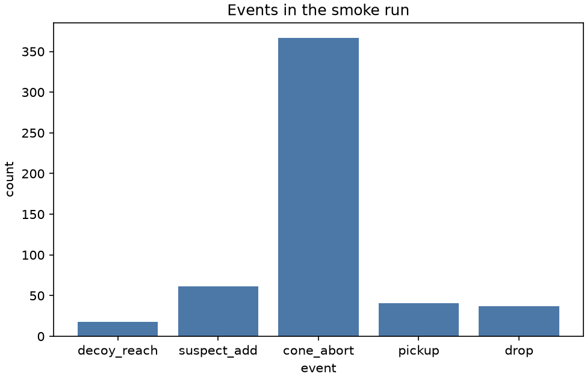

Stage report, step 1 of 6. Back to summary
| What | One run at d = 2, defense on, seed 1, headless. |
|---|---|
| Why | Detractors and the defense must run before any tuning or sweep (M3 exit 1). |
| Input data | Generated .argos file, d = 2, defense on, seed 1. |
| Output data | runs/smoke/20261111-113131_d2_def1_s6/ (4 files). |
| Result (numbers) | food_collected 37, wasted_robot_seconds 2719.6, decoy_reach 18, suspect_add 61, cone_abort 367. |
| Result (good or bad) | Good: decoy_reach and suspect_add rows exist. |
| Status | ran |
Figure and table

| runid | complete | decoy_reach | suspect_add | cone_abort | pickup | drop |
|---|---|---|---|---|---|---|
| 20261111-113131_d2_def1_s6 | True | 18 | 61 | 367 | 41 | 37 |